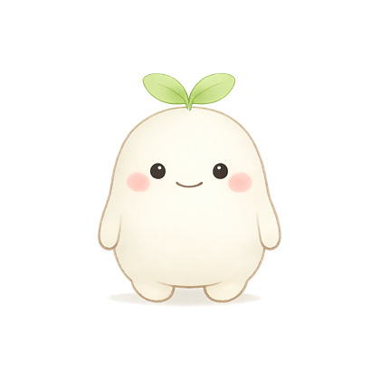
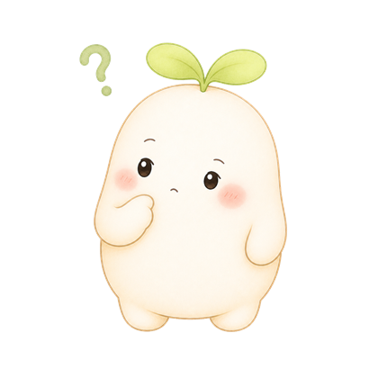
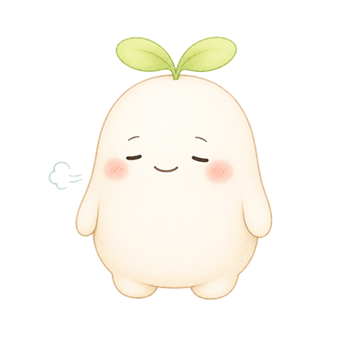
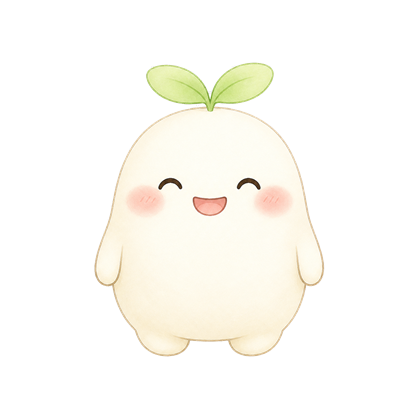
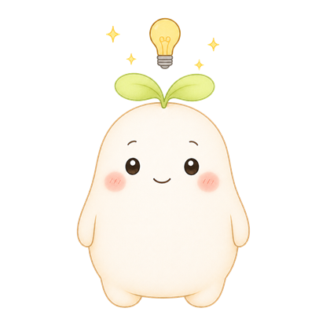
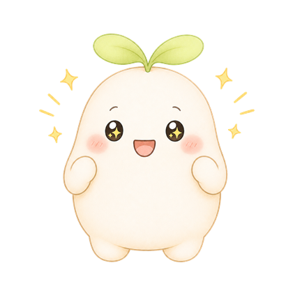
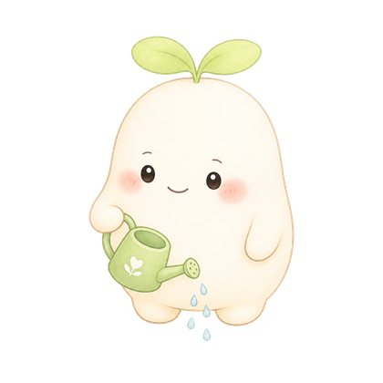

認知行動療法（CBT）の考え方をもとに、あなたの「困りごと・考え・気持ち・行動」を少しずつ整理していきます。うまく話せなくても大丈夫です。
CBTベースで、やさしく実践できるいくつ選んでも大丈夫。あとから変えられます。

思い出せる範囲で構いません。書けそうになければスキップできます。
いつ・どこで・誰と・何があったか、が書けると地図が描きやすくなります。
頭に浮かんだ言葉を、そのまま書いてもらえたら十分です。

だいたいで大丈夫です。

大きな目標でなくて大丈夫。いくつ選んでも構いません。
これは「仮」の地図です。これから一緒に、少しずつ直していきます。
出来事のあとに浮かんだ考えが、気持ちと行動につながっているみたいです。この流れをほどいていきましょう。

うまくいかなくても大丈夫。試したこと自体が地図の材料になります。
頭の中でぐるぐるしている考えを、いったん外に出してみます。書くだけで、考えと自分のあいだに少し距離ができます。

ここからは毎日ホームに、その日の小さな一歩が出てきます。
地図は使うほど、あなたに合ったものになっていきます。
約10〜15分でできます

いまの気持ちや状況を、すこしずつ整理していきます。
約10分・いつでも中断OK連続記録 3日目！すこしずつ、続いています
頭の中でぐるぐるしている考えを、いったん外に出してみます。書くだけで、考えと自分のあいだに少し距離ができます。
この1週間の気持ちの動きを、すぷらんと一緒に見わたします。
今日はここまでで十分です。できた日も、できなかった日も、記録になります。